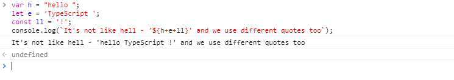

TypeScript development began in late 2012. Although it originated at Microsoft, its real creator is programmer Anders Hejlsberg, also known as the creator of languages like Delphi and C#. But this project began to develop as OpenSource.
The popularity and relevance of the ideas of the new language led to the fact that a number of these ideas will later become part of the new standard JavaScript. The new version of one of the most popular platforms for Web - Angular 2/4/5/6 is completely written in TypeScript jointly by Microsoft and Google.
TypeScript is a JavaScript based programming language.
Why do we need a different programming language for the client side in the web environment, if traditional JavaScript copes with this job , which is used on almost every web site?
But TypeScript is not just a new javascript.
At the same time, TypeScript is an extended set of JavaScript, which means that any JS program is a TypeScript program. In TS, you can use all those constructions that are used in JS. Moreover, the code on TS is compiled into javascript(ES3 +) and supported by the most of browsers.
Strong typing
Code readability
A simpler transition from the world of strict typing, rather than directly to JavaScript, in which the Dynamics rules
Backward compatibility with javascript
Broad IDE support
To get started with TypeScript, install the necessary toolkit. You can install TypeScript in two ways: through the NPM package manager or as a plug-in for Visual Studio.
To install NPM, it is natural to first install Node.js, then write "npm install -g typescript" on the command line.
reate app.js and app.ts files and connect the app.js file to html.
Write code in the app.ts file and in the command line we enter: "tsc app.ts".
The code will appear in the js file, and then just run the page.
Boolean
Number
String
Array
Tuple
Enum
Any
Null и undefined
Void: no specific value, mainly used as the return type of functions
Never: no specific value and is used as the return type of functions that generate or return an error
Object
We can create variables and constants, as in JavaScript. Using quotes is the same.

function add(a: number, b: number): number {
return a + b;
}
let result1 = add(1, 2);
console.log(result1);
let add = function (a: number, b: number) : number {
return a + b;
}
let result1 = add(1, 2);
function mathOp(x: number, y: number, operation: (a: number, b: number) => number): number{
let result = operation(x, y);
return result;
}
let operationFunc: (x: number, y: number) => number;
operationFunc = function (a: number, b: number): number {
return a + b;
}
console.log(mathOp(10, 20, operationFunc)); // 30
operationFunc = function (a: number, b: number): number {
return a * b;
}
console.log(mathOp(10, 20, operationFunc)); // 200
let sum = (x: number, y: number) => x + y; let result = sum(15, 35); // 50 console.log(result);
let sum = (x, y) => x + y; let result = sum(15, 35); // 50 console.log(result);
let square = x => x * x; let hello = () => "hello world" console.log(square(5)); // 25 console.log(hello()); // hello world
let sum = (x: number, y: number) => {
x *= 2;
return x + y;
};
let result = sum(15, 35); // 65
console.log(result);
More information: